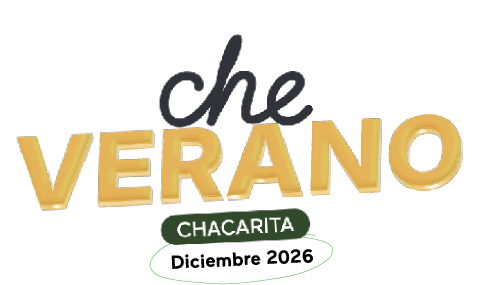

Diciembre 2026 · Exclusivo para estudiantes de TUMO Chacarita

Learning LabsTalleres cortos e intensivos para crear, probar y construir proyectos reales junto al equipo de TUMO Chacarita. Elegí una propuesta de la cartelera y solicitá tu vacante.
33 Propuestas Creativas
Fotografía, Música, Cine, IA Generativa, 3D, Videojuegos, Programación y Dibujo.
¿Qué es un Learning Lab?
Aprender haciendo,
en talleres i ntensivos.
Los Learning Labs son experiencias prácticas y focalizadas donde trabajás en un proyecto concreto, guiado por el equipo de TUMO Chacarita. Siguiendo el espíritu del TUMO Path, el proceso está centrado en vos: diseñás, testeás, iterás y presentás tus creaciones.
- Exclusivo para estudiantes activos de TUMO Chacarita
- Vacantes limitadas por cupo máximo en cada taller
- Una sola actividad por estudiante
Cartelera Diciembre 2026
Elegí tu p ropuesta
Explorá los talleres disponibles por disciplina. Tocá cualquier tarjeta para conocer los detalles y solicitar tu lugar.
- Disponible
- No disponible (Cupo lleno)
Cargando propuestas de talleres…
Asegurá tu lugar en TUMO Chacarita
Cada taller tiene un límite de participantes máximos. Elegí tu actividad favorita en la cartelera antes de que se completen las vacantes.
Explorar la carteleraPreguntas frecuentes
Todo lo que necesitás saber
¿Cuál es el estado de mi solicitud de vacante?
Ingresá tu DNI o el documento con el que te inscribiste para consultar el estado de tu vacante:
¿Quiénes pueden participar de los Learning Labs?
Las actividades de diciembre son exclusivas para estudiantes activos de TUMO Chacarita.
¿Qué datos se solicitan para la inscripción?
Se solicita nombre y apellido del estudiante, su número de DNI y su correo electrónico de TUMO (@tumo.ar).
¿Puedo inscribirme en más de un taller?
No. Para garantizar que todos los chicos tengan oportunidad de participar, cada estudiante puede solicitar vacante en un solo taller.
¿Qué sucede cuando un taller figura como "No disponible"?
Significa que se ha completado el número máximo de participantes permitidos para ese taller. Te sugerimos volver a la cartelera y seleccionar otra de las propuestas con vacantes disponibles.
¿Los talleres son gratuitos?
Sí, absolutamente todos los talleres de TUMO Chacarita son 100% gratuitos.
¿Cómo me entero de la confirmación final de mi vacante?
Una vez enviada la solicitud, el equipo de TUMO Chacarita enviará la confirmación definitiva por correo electrónico a la casilla registrada antes de la fecha de inicio del lab.
¿Cómo contacto a la sede si tengo dudas?
Podés escribirnos a chacarita@tumo.ar o consultarle a nuestro asistente virtual Flashy en la esquina inferior derecha.